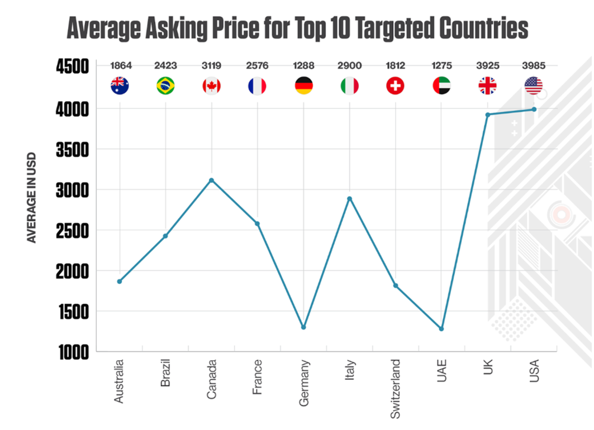

Access Brokers play a pivotal role in the cybercrime ecosystem by providing unauthorized access to network systems. Mostly motivated by the highest bidder, they are the most intriguing as they decide who will gain access to conduct the breach. Without them rest of the ecosystem would be useless for operation. Understanding of access brokers offers insights into their motivations, behaviors, and operational methods. While they often may, on light, hide behind "Pen-testers" job descriptions, they may be affiliated with a RaaS groups or are lone rogues who monetize the access on their own. Like God Janus who was recognized as the deity of doorways and transitions, access brokers serve as gatekeepers, holding keys and controlling entry points into networks. They possess knowledge of vulnerabilities and facilitate unauthorized access for other cybercriminals, effectively acting as intermediaries in the cyber underworld. This power is the product they monetize.
Unauthorized Entry as a Product
Access is a product that can have different forms. This access may be in the form of credentials, session tokens, or 0-day vulnerabilities that are monetized by access brokers either through sales directly to ransomware groups, or on black market forums like Exploit Forum, XSS, or other private forums. Access broker's product cycle consist of:
- Collection: Gathering information on how to gain access to target systems.
- Packaging: Bundling stolen access with additional data and system details.
- Sale: Selling access through dark web marketplaces, sometimes in bulk.
- Exploitation: Buyers leverage the stolen tokens to carry out attacks.
Credentials, or in other words login details, are the most lucrative as they represent authentic access already authorized by the organization. Their attractivity stems from the fact, that they are already established access of employees of the targets, and they usually do not trigger any alerts. Most often, they are harvested by (spear)phishing, password brute-forcing, or info-stealing malware, e.g. keylogger. Depending on whether the credentials belong to customers or employees, their value differs and is based also on what country, sector, and company the credential belongs to. Overall, they are easily accessible for a few hundred or thousands of dollars on the dark market.
In addition to credentials that represent the majority of the access brokers market, there are session tokens that allow cybercriminals to bypass traditional security measures like passwords and multi-factor authentication that are sold as well. They exploit vulnerabilities in remote access services like RDP and VPNs. Another product, 0-days, are rarer and come with a more expensive price tag. Due to their nature, they are rather used by state actors than cyber criminals. Often, they can be sold back to the companies that are proactively trying to pay in case someone finds any vulnerability in their system. Nevertheless, conceptually at least, 0-day vulnerabilities offer access that can be monetized by access brokers as well.
The access brokers' market exists because the access brokers either don't have sufficient capabilities to utilize it and conduct the cyber operation themselves or just don't have the risk appetite to do so. This "access-as-a-product" model provides efficiency and scalability to cybercriminal operations by streamlining their attacks. Pricing is also typically based on the target’s publicly stated revenue and is auctioned in an attempt to encourage a bidding war. The sectors attracting the highest average asking price for access were government, financial services, and industrial and engineering organizations.
The Market for Access Brokers
The access brokers' market exists because the access brokers either don't have sufficient capabilities to utilize it and conduct the cyber operation themselves or just don't have the risk appetite to do so. This "access-as-a-product" model provides efficiency and scalability to cybercriminal operations by streamlining their attacks. Pricing is also typically based on the target’s publicly stated revenue and is auctioned in an attempt to encourage a bidding war. The sectors attracting the highest average asking price for access were government, financial services, and industrial and engineering organizations.

To mitigate the above-mentioned threat, organizations should in addition to establishing strong access controls, mandatory multi-factor authentication, and zero-trust architecture also monitor for suspicious activity, especially on remote access services, and offer awareness training against social engineering and phishing to their employees. Also, develop bug bounty programs offering payments, either for 0-days or credentials that would allow the cyber-criminals to report the leaks directly to the company. While there is a cost connected to such a program, this cost will most likely be always smaller than one that would come in case the access would be used in a malware attack against the company. To improve security, companies need to embrace and work with their vulnerabilities, not to ignore or hide them.
Conclusion
While cyber security is not the main earning function of many businesses, it is necessary to protect the earnings from still-growing cybercriminals. Cybercrime is still growing trend and only after we accept the existence and understand the access brokers that are the most integral part of the cyber criminal groups targeting the businesses, we can design systems and procedures more immune to these attacks.